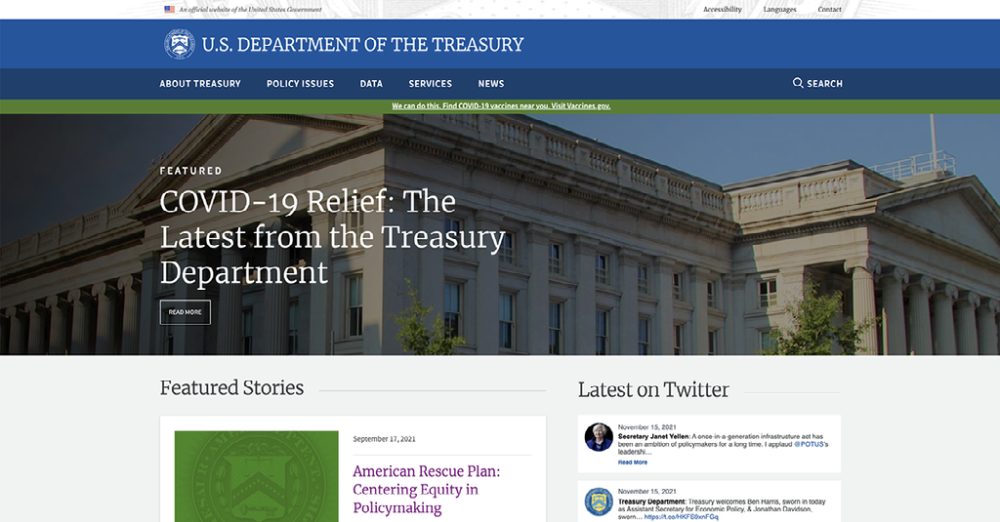

Project Dates: Oct. 7-Nov. 16, 2021
Tools: Adobe XD, Miro, InVision, Google Sheets, Google Docs
Overview
The mission of The United States Department of the Treasury (USDT) is to maintain a strong economy and create economic and job opportunities. The agency’s website serves as a portal between people living in the United States and the department. As a student of the University of Oregon UX/UI Bootcamp, I was tasked to redesign the USDT website.
The Challenge
The USDT website contains a myriad of information that people who are not inherently knowledgeable about the agency find overwhelming and confusing.
Hypothesis
People who live in the United States need to be able to access the USDT website and feel comfortable navigating information so they have confidence in the agency that is at the center of the nation’s economy. By analyzing and simplifying the primary navigation of the site as well as placing relevant information at the forefront of the home page, visitors to the site are welcomed with information that they can use.
Understanding the User
My approach for understanding who benefits from the information on the USDT website started with considering the American workforce and those who pay taxes.
I wanted to understand the steps that people take to find information about taxes and tax credits on the website as well as information about the national debt.
I identified the process that people would take to accomplish these select tasks on the USDT website. The series of wireflows above show the clicks of a user that take them to the national debt, a W4 form and Child Tax Credit information. This helped me understand where people would run into difficulty while navigating through the site in search of information that's important to them.
The people who volunteered to test the site were asked to navigate through the site to locate the pages outlined in the wireflows. Here are some comments those people made during user testing:
Data Synthesis and Feature Prioritization
In order to focus on keeping the website simple to use for people from all walks of life, I wanted to prioritize specific features on the redesigned site. Primarily, I wanted people to feel comfortable as soon as they reached the home page. I wanted to find a way to make “Featured Stories” more prominent so that visitors to the site have more opportunities to learn about the Treasury Department’s most relevant information.
Using Terms That People Understand
In redeveloping the website navigation, using easy-to-understand terminology on the main navigation would increase the likelihood of someone finding information faster. This is the first iteration of the revised sitemap. In later testing, the word “public” in the main navigation was changed to “information resources” based on feedback.
From Wireframes to Prototypes

Upon completion of data synthesis, I began designing the landing page of the USDT site. I prioritized placing relevant information above the fold so that people would spend more time browsing the homepage.
Homepage Before Redesign
The above the fold area of the existing USDT website has limited information. The majority of the screen is occupied by a large image and a single featured article.
Homepage After Redesign
The new design enables visitors to the site to find more relevant information faster.
Try Out the Desktop PrototypeMobile Interface
Try out the Mobile PrototypeOutcome
Users who tested the prototypes expressed that finding information and navigating was more intuitive. Mobile users liked the tab-style drop-down menu and found it simple to use. Users also liked that there was more information of interest that was available from the landing page, such as information about Child Tax Credits and COVID-Relief.
Future development of this project would include complete secondary page design and a re-evaluation of the site map.